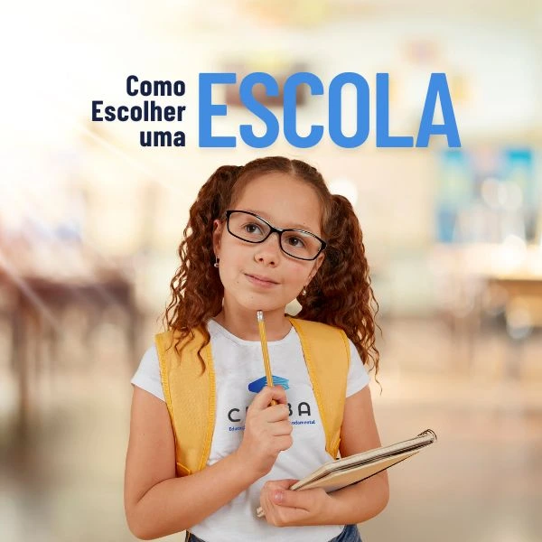

Você decidiu escolher uma escola para matricular seus filhos e então começa uma maratona de pesquisar e visitar os estabelecimentos desejados antes da escolha final. Certamente esse é um momento muito importante e uma decisão crucial, pois, é na escola que os seus filhos passarão grande parte do dia. A decisão certa pode ser um fator fundamental para o sucesso acadêmico e na educação dos seus preciosos filhos.
Então, relatamos abaixo algumas questões (perguntas) a serem consideradas antes de matricular seus filhos numa escola. Veja, pondere, e depois nos conte como foi a sua experiência na Escola CEABA.
01. Como é a Estrutura Física da Escola?
Uma estrutura adequada que propicie um ambiente para o desenvolvimento das habilidades da criança é muito importante. Observe se os ambientes são adequados para o estudo (mobília conta) e atividades esportivas; se há espaço para a criança brincar, ter as refeições e descansar; e se o ambiente oferece segurança.
A Escola CEABA tem uma estrutura adequada à cada faixa-etária, proporcionando conforto, segurança e a possibilidade do desenvolvimento da criança. São mais de 2.500 m2 de área com sala de aula climatizadas, piscina, playground e muito mais. Venha conhecer!
02. Qual é a Proposta Pedagógica da Escola?
A proposta pedagógica deve contemplar o desenvolvimento integral da criança (cognitivo, motor e emocional), estimulando o protagonismo. Os projetos pedagógicos devem contemplar atividades extra-curriculares que contribuem para essa formação integral. Torna-se importante nesse contexto o material didático adotado, bem como o estudo de línguas, música, esportes, e outras competências.
Dentro de uma proposta sociointeracionista, aliamos projetos pedagógicos que visam o desenvolvimento integral da criança ao conteúdo proposto. Destacamos o programa bilíngue, musicalização e socioemocional. Em sua visita à escola conheça todos os projetos pedagógicos e o material didático utilizado.
03. A escola é Acolhedora?
O acolhimento escolar vai além da recepção. Na verdade, uma escola acolhedora tem um ambiente escolar saudável, estruturado, com regras claras e suporte aos alunos. Além disso, a relação família-escola é valorizada, há uma preocupação na prevenção de práticas degradantes, como o bullying, e projetos socioemocionais. Geralmente, uma escola acolhedora também estão envolvidas com projetos sociais.
Reconhecidamente acolhedora, a Escola CEABA, tem a prática da escuta-ativa, onde alunos e pais têm acesso direto à coordenação e direção da escola. Projetos como o socioemocional e artes, visam auxiliar na socialização e engajamento do aluno, bem como a prevenção de bullying e outras práticas.
04. Tem um Programa de Busca pela Excelência?
A excelência de uma escola vai além de um ensino de qualidade. Ela se mostra no contexto geral, onde busca-se sempre melhorar em cada detalhe. Você percebe isso no atendimento, nos eventos voltados para a comunidade escolar, no cuidado com a limpeza, refeições, e claro no acompanhamento do rendimento escolar. Durante a visita ao estabelecimento escolar alguns desses itens podem ser notados, em conversa com a coordenação, outros também.
A equipe da Escola CEABA está constantemente passando por treinamentos e aperfeiçoamento, desde a direção ao corpo docente. As refeições da escola são acompanhadas por nutricionistas. Os eventos são preparados com muito carinho para criar momentos memoráveis.
05. A escola cultiva princípios e valores?
Os princípios e valores da escola devem estar em sintonia com os princípios de valores da família. Isso não tem a ver com religião, nem com uma disciplina escolar especificamente. Mas, esses valores devem ser ressaltados na cultura escolar. Nos relacionamentos como um todo. Qual princípio você acha fundamental na formação da vida de seu filho?
Ao visitar a Escola CEABA você poderá notar valores como: Respeito, Empatia, Responsabilidade e o Amor, dentro da comunidade escola. O que é reforçado dentro de sala de aula e nos projetos pedagógicos. Vamos juntos fazer do mundo um lugar melhor?
A nossa torcida é para que você encontre uma escola comprometida com a excelência no ensino e acolhedora. A Escola CEABA está de braços abertos e prontos para esclarecer qualquer dúvida. Clique no botão de WhatsApp no menu e fale conosco!